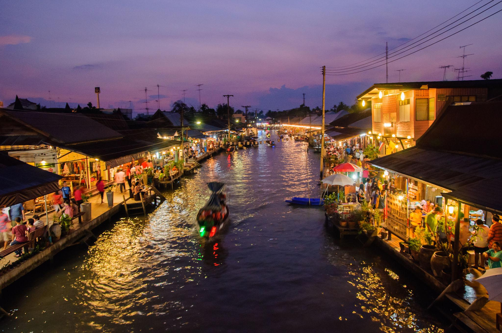
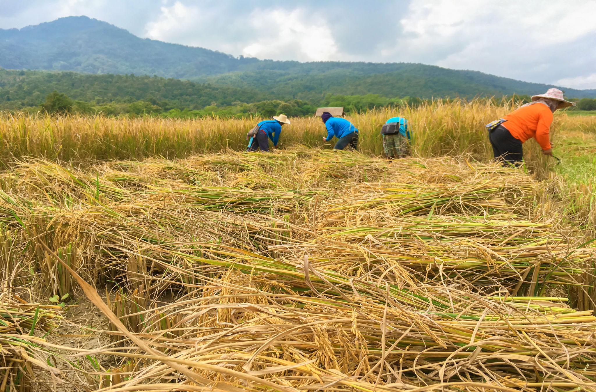
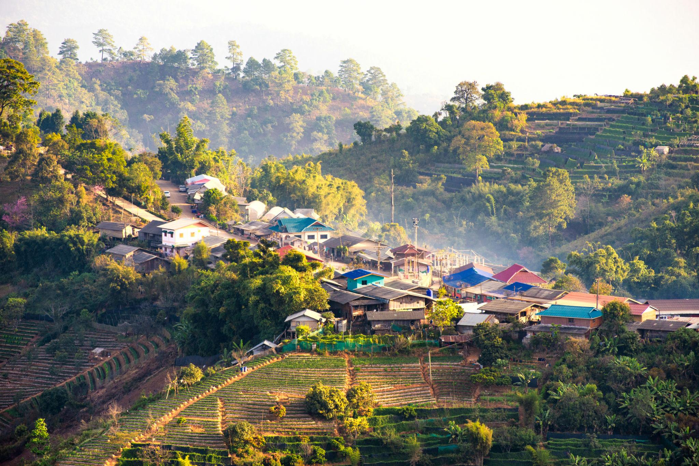
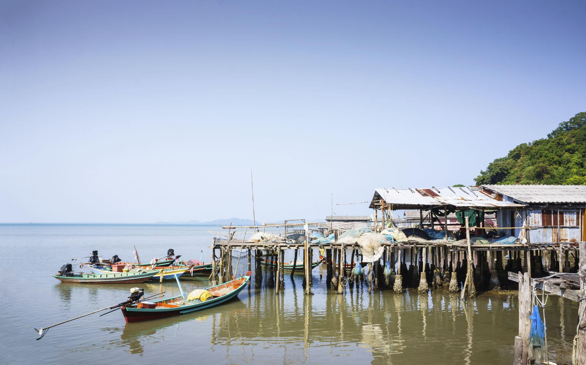
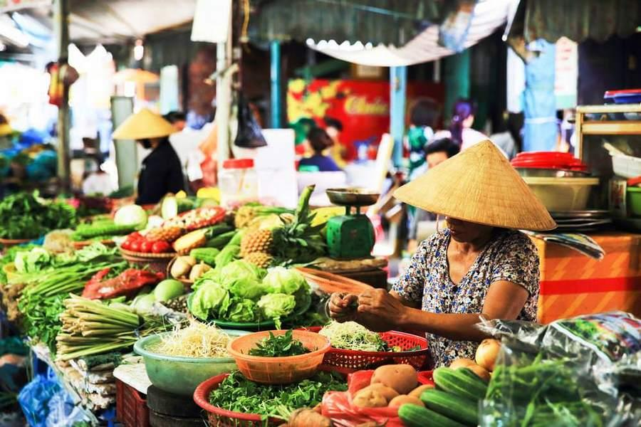
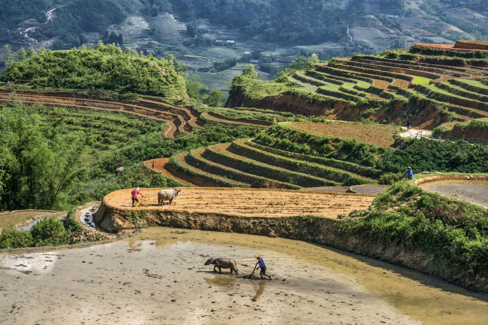
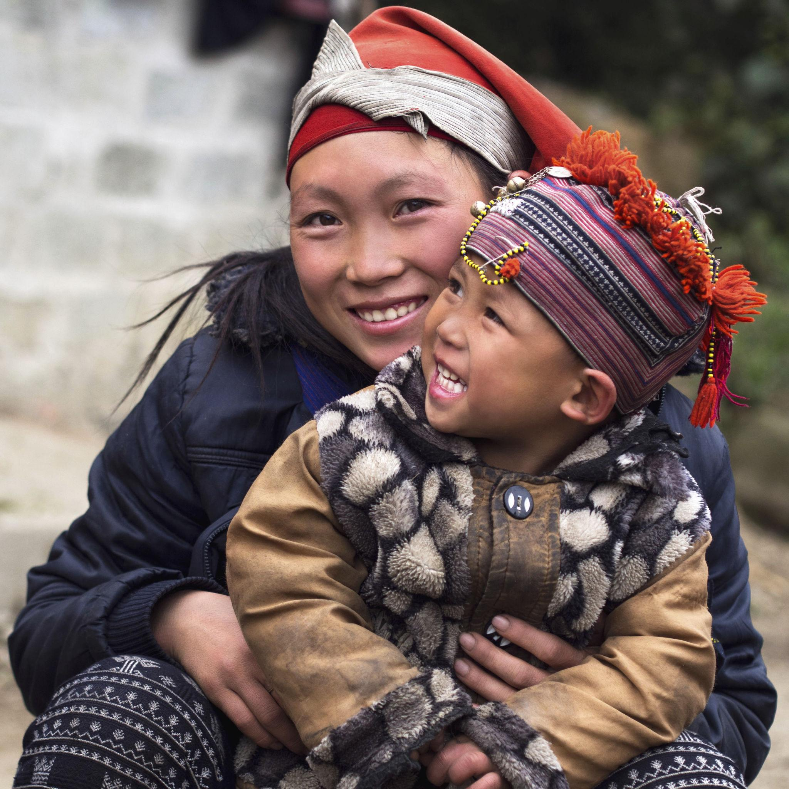
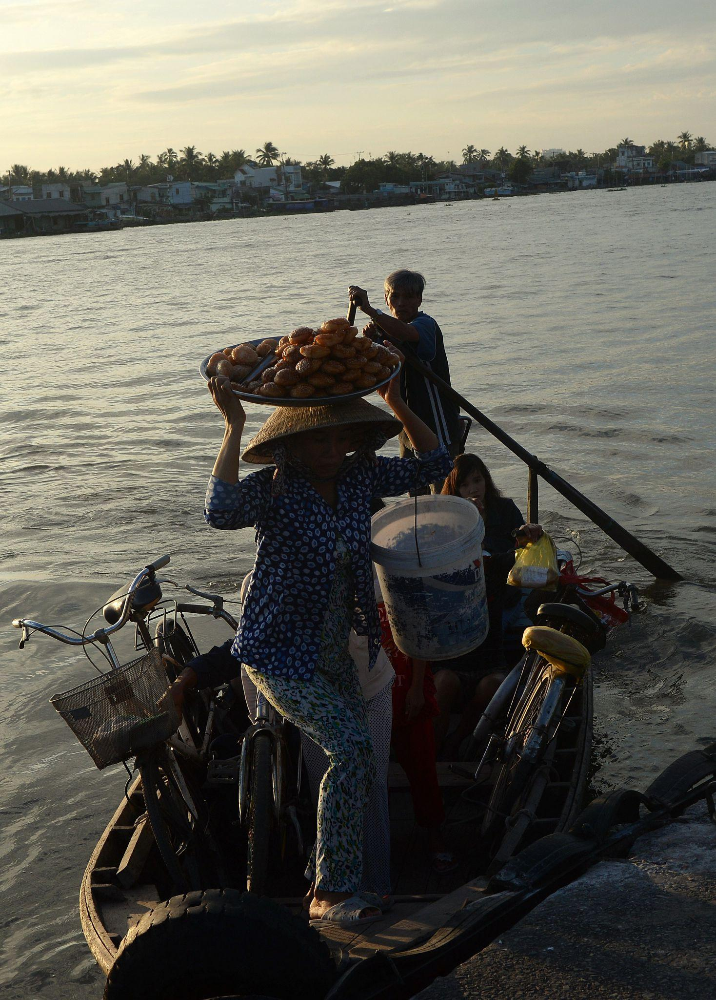

Each month, A Closer Walk invites you to lift your eyes beyond your neighborhood and pray for the nations.
This month, we are focusing on Thailand and Vietnam —
two beautiful, vibrant nations whose people are deeply loved by God and in need of His light.
Thailand is a nation of golden temples, lush jungles, and warm, welcoming people.
Approximately 95% of its 70 million citizens practice Buddhism, with less than 1% identifying as Christian.
Yet God is moving — through missionaries, through underground churches, and through the prayers of His people around the world.

Floating Market, Central Thailand
Vendors navigate colorful boats loaded with produce — a scene of everyday life for millions. Each face here is known by God.

Rice Farmers, Rural Thailand
Families work the fields from sunrise to sundown. Pray that the God who waters every harvest would water their hearts too.

Hill Tribe Community, Northern Thailand
Dozens of distinct hill tribe peoples — Akha, Karen, Hmong — live in the mountains, many still waiting to hear the Good News.

Stilt Fishing Village, Southern Thailand
Coastal communities built over the water — families whose daily lives revolve around the sea. Pray for the Gospel to reach every shore.
🙏 Pray with Us for Thailand
- That the Christian community (less than 1%) would multiply and grow bold in sharing their faith openly
- For the many hill tribe communities in Northern Thailand who have yet to hear the Gospel in their heart language
- For Thai believers who face family rejection and social pressure when they choose to follow Christ — the cultural cost is real
- For Thai young people — increasingly connected online — to encounter Jesus through social media and digital ministry
- For missionaries and local pastors laboring faithfully in spiritually difficult ground
- For God to use the beauty of Thailand's land and people to draw hearts toward their Creator
Vietnam is a nation of stunning beauty — terraced rice fields, ancient cities, and nearly 100 million people.
The church in Vietnam is growing despite government restrictions, with vibrant communities among ethnic minorities
and in rapidly growing cities like Ho Chi Minh City and Hanoi. God is moving in Vietnam!

Street Market, Vietnam
Markets pulse with life every morning across Vietnam — vendors, families, neighbors. Pray for the Gospel to travel these same streets.

Sapa Rice Terraces, Northern Vietnam
Breathtaking terraces carved by hand over centuries. The Hmong and Dao people here are among the most responsive to the Gospel in all of Asia.

Hmong Village, Sapa Region
The faces of the Hmong people — beloved by God, many are coming to Christ in growing numbers.

Mekong Delta, Southern Vietnam
Life on the river — millions of families in the Delta depend on these waterways. Just as the disciples once fished, pray workers are sent here.
🙏 Pray with Us for Vietnam
- For greater religious freedom — the Vietnamese government requires churches to register with the state, and unregistered congregations — especially among ethnic minorities — face raids, harassment, and forced closures
- For the growing house church movement to thrive and remain deeply rooted in Scripture despite pressure
- For the Hmong, Dao, and other ethnic minority communities in the mountains where Christianity is spreading rapidly — and where believers face some of the harshest opposition
- For the millions of Vietnamese living and working abroad to encounter Christ and carry the Gospel home
- For young people in cities like Hanoi and Ho Chi Minh City searching for meaning beyond materialism
- For God's protection over pastors and Christian leaders who face surveillance, intimidation, and arrest for their faith
Join Us in Prayer
The harvest is plentiful, but the workers are few. Your prayer is a real, powerful act of partnership
with missionaries, pastors, and believers on the ground in Thailand and Vietnam.
You don't have to go to make a difference — you just have to pray.
"Therefore pray earnestly to the Lord of the harvest to send out laborers into his harvest." — Matthew 9:38
Send a Prayer Request